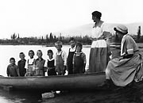
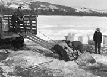
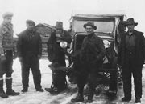
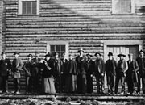
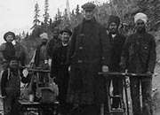

Le tournant du siècle a fourni de nombreuses occasions d’affaires. Les Premières nations ont adapté leurs aptitudes traditionnelles à la nouvelle économie de marché. Les Tlingit et Tagish travaillaient comme guides et porteurs au col Chilkoot, pendant qu’à Dawson, les Han demandaient 5 $ aux prospecteurs qui venaient d’arriver pour les amener au ruisseau Bonanza.
Une variété d’entreprises se sont installées et ont offert de nombreux services en réponse au boum : cantines mobiles, diseurs de bonne aventure, prostituées, etc. Il y avait également des emplois dans le domaine des transports. Les Autochtones et les non-Autochtones coupaient du bois pour les bateaux à aubes; les fermiers fournissaient le foin pour les chevaux des diligences et les forgerons travaillaient dans les écuries.
L’expansion économique a apporté d’autres changements. Les grandes entreprises achetaient les petites entreprises individuelles. Les petits postes de traite étaient achetés par les sociétés de commerce. En 1899, William Drury s’est joint en affaires à Isaac Taylor. Leur entreprise, Drury & Taylor, a fonctionné durant plus de 50 ans. De leur maison-mère à Whitehorse, ils ont fondé un réseau de postes de traite dans le Yukon. Ils ont même fait faire leur propre monnaie à Ottawa, qu’ils ont utilisé de 1912 à 1950.
Dans le Nord, les femmes avaient des possibilités de carrière qu’elles n’auraient probablement pas eues ailleurs. En plus d’occuper les emplois traditionnels comme cuisinières ou enseignantes, elles étaient gérantes d’hôtels, journalistes et posaient leur candidature aux élections. Aujourd’hui, elles pilotent des avions, travaillent dans les mines souterraines et conduisent des autobus. Les entrepreneurs autochtones ont établi les fondations pour les entreprises et les possibilités de carrière d’aujourd’hui grâce aux nouveaux espoirs créés par les ententes sur les revendications territoriales.
«… un vieux mineur qui, l’hiver dernier a travaillé…sur une des plus fructueuses concessions de l’Eldorado… n’a pas fait autant d’argent que s’il avait travaillé à 15 $ par jour.»
Rapport annuel de la Police à cheval du Nord-Ouest (1898)
Passer au tableau Bonnes PerspectivesEmplois, carrières et métiers
(Ci-dessus) M. Lokkin, guide de chasse de Carmacks, et son équipe à la chasse au mouflon (vers 1915).
AY, collection Back, 90/19 nº 183
Pique-nique d’adieu de l’enseignante, Mme Rhinehart, région de Mayo, vers 1924.
AY, collection Hare, nº 6665
Chargement de blocs de glace pour l’usage sur les bateaux à aubes (printemps 1937). On entreposait les blocs dans un dépôt de glace. Dans les glacières, on les couvrait de bran de scie et ils duraient jusqu’à la fin de l’été.
AY, collection Tidd nº 8428
Don Murray, Frank Slim, Carl Chambers, Joe Horsfal et Finley Beaton à Minto devant une des premières motoneiges (1936).
AY, collection Irvine nº 1902.
Le personnel du Dawson Daily News (1899).
AY, collection Musée canadien des civilisations nº 657
Flo Whyard, rédactrice en chef de la section du Yukon de la revue Alaska (vers 1970).
AY, collection Harrington, 85/25 nº 385
Le pilote James «Bud» Potter chez le barbier, Whitehorse (12 juin 1942).
AY, collection Finnie 81/21 nº 39
Brigade d’entretien de McDonald, près de «Car-Cross» (1906). Notez les quatre hommes sikhs.
AY, collection Scott/Phelps, 89/31 nº 186